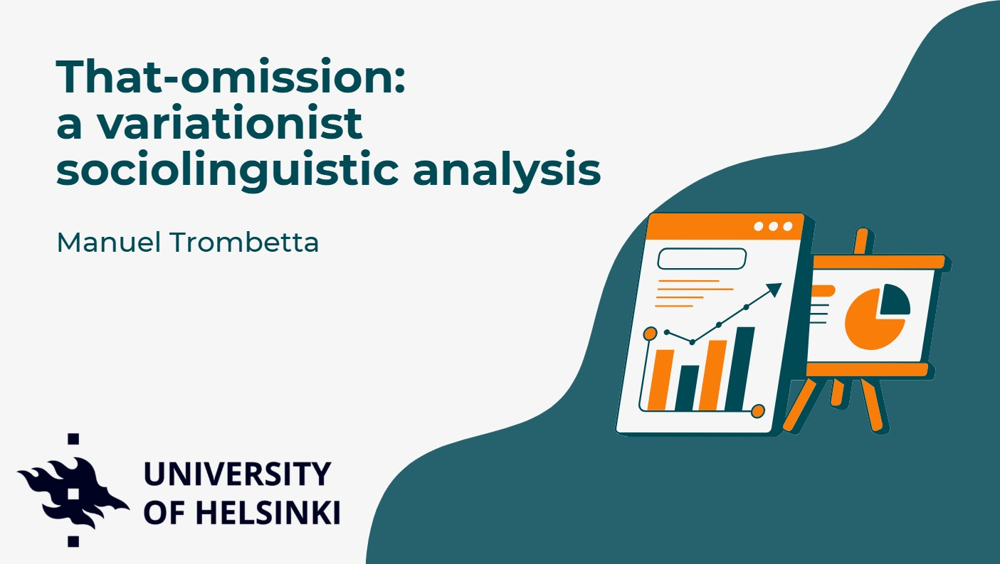
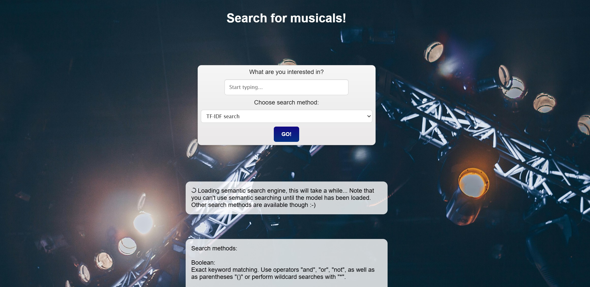

Mapping Italian Expressions for “Now”

A linguistic GIS project exploring the spatial distribution of mo, ora and adesso across Italy.
View project →Digital Humanities · NLP · GIS · Data
I work at the intersection of language, culture, data and digital methods.
View my projectsI am a Digital Humanities student interested in Computational Linguistics, Natural Language Processing, Geographic Information Systems and data-driven approaches to cultural research.
A linguistic GIS project exploring the spatial distribution of mo, ora and adesso across Italy.
View project →
A map-based reconstruction of Garibaldi’s 1860 campaign, focusing on movement, geography and Italian unification.
View project →
A variationist sociolinguistic analysis of optional that omission in English using statistical modeling.
View project →
A web-based search system for a musical corpus, combining Boolean search, TF-IDF ranking and semantic similarity.
View project →